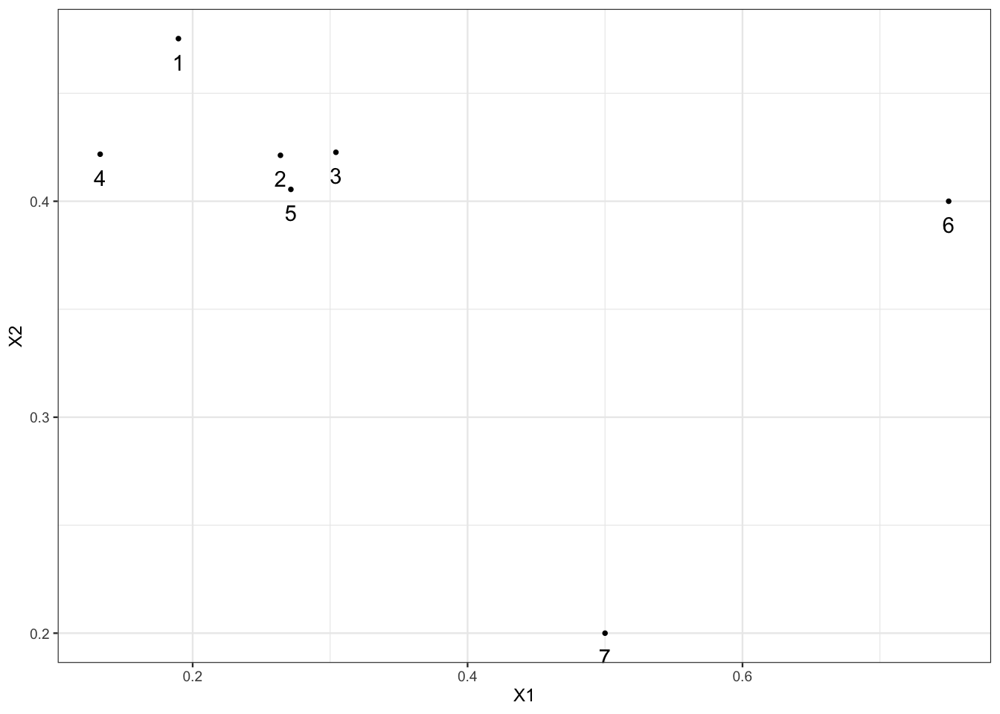

6 Dbscan et clustering spectral
6.1 L’algorithme DBSCAN
L’algorithme DBSCAN (Density Based Spatial Clustering of Applications with Noise, Ester et al. (1996)) fait partie des méthodes basées sur la densité : les clusters correspondent à des zones de fortes densité séparées par des zones où la densité est plus faible. Ces zones sont définies par deux types de points :
- les noyaux : des points qui contiennent plus de
minPtspoints à une distance inférieure àepsilon; - les points de bordure : les points qui vont se situés en bordure des clusters ou qui sont isolés.
On charge le package
library(dbscan)Exercice 6.1 (Noyaux et points de bordure) On considère le “nuage” de points suivant :

On fixe
eps=0.13etminPts=4. À l’aide de calculs simples, identifier les noyaux et points de bordure.Il suffit de calculer les distances entre individus et de compter le nombre de points à une distance inférieurs de
epsde chaque individu.On déduit que 1, 2, 3 et 5 sont des noyaux, 4, 6 et 7 sont des points de bordure.
Retrouver ces résultats à l’aide de la fonction
is.corepoint.Effectuer l’algorithme dbscan avec ces valeurs de paramètre et interpréter.
L’algorithme a identifié 1 cluster de 5 points et 2 outliers (6 et 7).
Est-ce que des points de bordure peuvent être affectés à des cluster ? Justifier.
Oui ! On voit par exemple que 4 est dans le cluster. Ce point est en effet connecté aux 4 autres. On voit par exemple qu’il est connecté avec 2 car 4 et 2 sont tous les deux accessibles depuis 1.
Exercice 6.2 (Calibration de dbscan) On reprend les données de l’Exercice 5.1 :
tbl <- read_delim("data/donclassif.txt",delim = ";")
ggplot(tbl)+aes(x=V1,y=V2)+geom_point()
En utilisant la stratégie proposée dans l’aide de dbscan, calibrer l’algorithme pour essayer d’identifier au mieux les différents clusters. On pourra envisager une deuxième étape pour affecter les petits clusters aux gros…
On fixe minPts=3 et on regarde la distance entre chaque point et son deuxième plus proche voisin.
On choisit eps=0.3 et on visualise les résultats :
On remarque que les groupes 8 à 12 ont des effectifs très faibles. On propose de les affecter au “gros” groupe le plus proche en utilisant la distance du min :
6.2 Clustering spectral
Le clustering spectral est un algorithme de classification non supervisé qui permet de définir des clusters de nœuds sur des graphes ou d’individus pour des données individus/variables. L’algorithme est basé sur la décomposition spectrale du Laplacien (normalisé) d’une matrice de similarité, il est résumé ci-dessous :
Entrées :
- tableau de données \(n\times p\)
- \(K\) un noyau
- \(k\) le nombre de clusters.
- Calculer la matrice de similarités \(W\) sur les données en utilisant le noyau \(K\)
- Calculer le Laplacien normalisé \(L_{\text{norm}}\) à partir de \(W\).
- Calculer les \(k\) premiers vecteurs propres \(u_1,\dots,u_k\) de \(L_{\text{norm}}\). On note \(U\) la matrice \(n\times k\) qui les contient.
- Calculer la matrice \(T\) en normalisant les lignes de \(U\) : \(t_{ij}=u_{ij}/(\sum_\ell u_{i\ell}^2)^{1/2}\).
- Faire un \(k\)-means avec les points \(y_i,i=1,\dots,n\) (i-\(ème\) ligne de \(T\)) \(\Longrightarrow\) \(A_1,\dots,A_k\).
Sortie : clusters \(C_1,\dots,C_k\) avec
\[C_j=\{i|y_i\in A_j\}.\]
L’objet de ce chapitre est de travailler sur cet algorithme en le programmant, puis en utilisant la fonction specc du package kernlab.
On crée tout d’abord un graphe avec trois composantes connexes : on utilise la commande sample_gnp() qui permet de créer un graphe selon le modèle d’Erdos-Renyi.
library(igraph)
set.seed(1)
n1 <- 5
n2 <- 3
n3 <- 2
n <- n1+n2+n3
# il faut prendre des grandes valeurs de p sinon on risque d'avoir des sous-graphes non connexes
p1 <- 0.85
p2 <- 0.75
p3 <- 0.7
G1 <- sample_gnp(n1,p1)
G2 <- sample_gnp(n2,p2)
G3 <- sample_gnp(n3,p3)
G <- G1 + G2 + G3 # il cree un graphe avec ces 3 sous-graphes
plot(G)
On vérifie le nombre de composantes connexes
components(G)$no[1] 3Exercice 6.3 (Laplacien non normalisé)
Calculer la matrice d’adjacence de G et en déduire le Laplacien normalisé. On pourra utiliser la fonction
as_adj.Retrouver ce Laplacien avec la fonction laplacian_matrix.
Calculer les valeurs propres et représenter les sur un graphe. Que remarquez-vous ?
et on observe à nouveau un trou spectral entre les valeurs propres 3 et 4. Conformément à la théorie, l’ordre de multiplicité de la valeur propre 0 est égal au nombre de composantes connexes du graphe.
Obtenir les trois vecteurs propres associés à la valeur propre nulle. Commenter.
On calcule les 3 vecteurs propres :
Normaliser ces vecteurs. On pourra utiliser la fonction
normalize <- function(x){ return(x/sqrt(sum(x^2))) }On normalise à l’aide de la fonction normalize :
Terminer l’algorithme avec le \(k\)-means.
Exercice 6.4 (Clustering spectral avec specc) On reprend les données de l’Exercice 5.1 :
tbl <- read_delim("data/donclassif.txt",delim = ";")Faire le “meilleur” clustering spectral, on pourra utiliser plusieurs noyaux et plusieurs valeurs de paramètres.
On commencera par lancer la procédure sur un sous-échantillon de taille 1000
On proposera ensuite une autre solution qui permettra de traiter tous les observations.
On commence en tirant un sous-échantillon et un choisit 9 groupes.
Pour pouvoir appliquer l’algorithme à toutes les données on
fait un \(k\)-means avec 1000 groupes
fait le clustering spectral sur les centroïdes
affecte tous les individus en fonction du \(k\)-means initial.